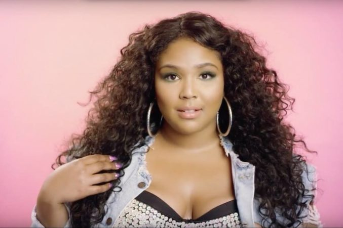

Girlz can..
Love yourself
"Theirs no such thing as a life that's better than yourz"- J.cole

When you get stuck on what you don't like, it can really bring down your self-esteem. Being a Teenager in high school is extremely difficult, especially when you start becoming very self conscious about yourself, which didn’t happen in middle school. When I was younger, the only thing I thought about was what games my friends and I were going to play tomorrow and the day after that, not our body image or appearance.
Often times the reasons why teenage feel insecure is because we subconsciously compare ourselves to other females. Since the upbringing of social media we find ourself feeling like imposters compared to media influencers, like the Kardashians, who constantly post pictures of their “beautiful” bodies. They don’t post the making of their body, or plastic surgeries, or photoshop, they only show the good parts of their life- because they literally get paid to post pics and videos.